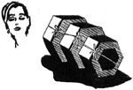

1952—How to Make Hats
by Ruby Carnahan
Making Straw Braid Pill Box on a Block
MATERIAL REQUIRED
- Four to six yards of 1" straw braid.
- Use a square crown block correct headsize for blocking braid.
DAMPEN BRAID
Wrap straw braid in a damp cloth for several hours before using.
TOP OF CROWN
Wind one end of straw with a thread, fold slightly lap and manipulate braid, sewing braid into a circle for about two rows of braid, fasten thread. Pin braid to top center of block.
SIDE CROWN
Continue pulling and fitting braid, lapping each row slightly, until top of block is covered with braid, then pull braid as you start to pin braid to side crown and continue pinning and lapping each row of braid slightly until desired measurement is reached on side crown, usually 2 1/2" dependent entirely on current style. Use push pins to pin braid to block, then baste braid. Remove push pins.
STEAM BRAID ON BLOCK
Carefully steam braid on block by holding block over steaming tea kettle for several minutes. Allow braid to dry on block.
SEWING BRAID
Take straw off block and sew each row of braid together with matching thread, concealing stitches in straw. Remove basting.
SIZING STRAW
After sewing braid return to block and pin bottom row of braid to block. Slightly steam again and allow to thoroughly dry on block. Then apply a coat of straw sizing and let straw dry on block. Finish inside of hat with a swirled headband.
NON-HEADSIZE PILL BOX
For a Non-headsize pill box use a 21" headsize block or smaller.
Instructions for swirled headband on page 45.